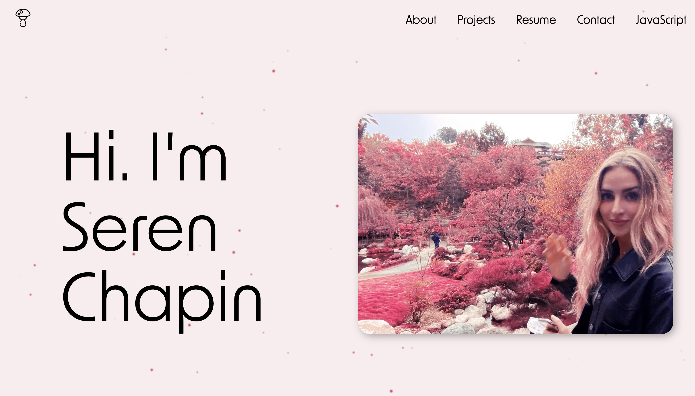
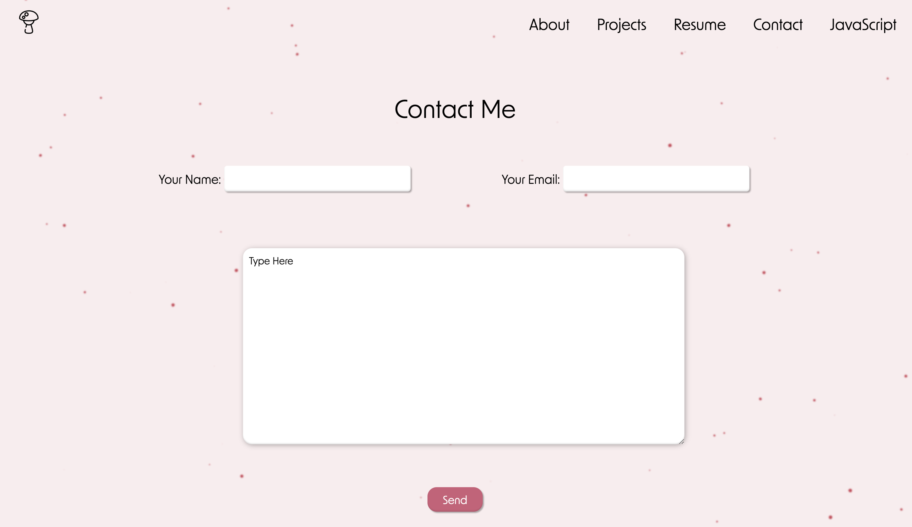
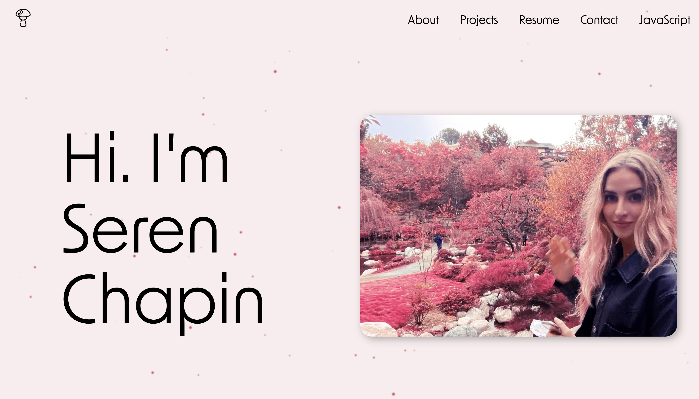
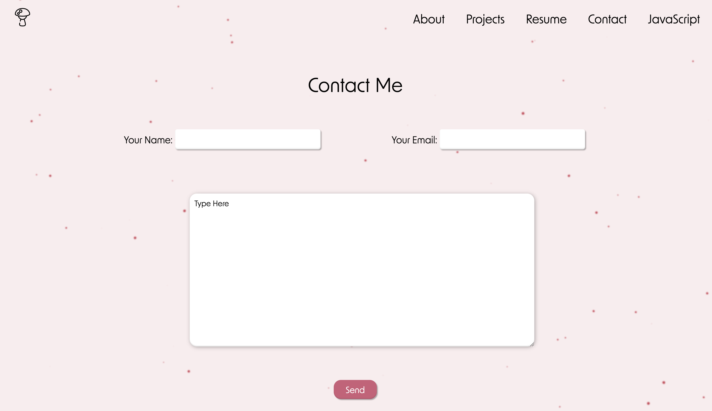
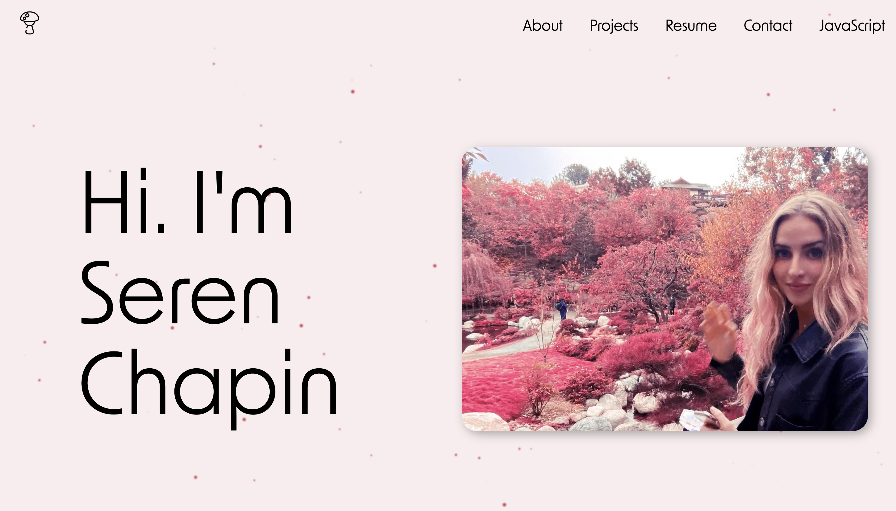
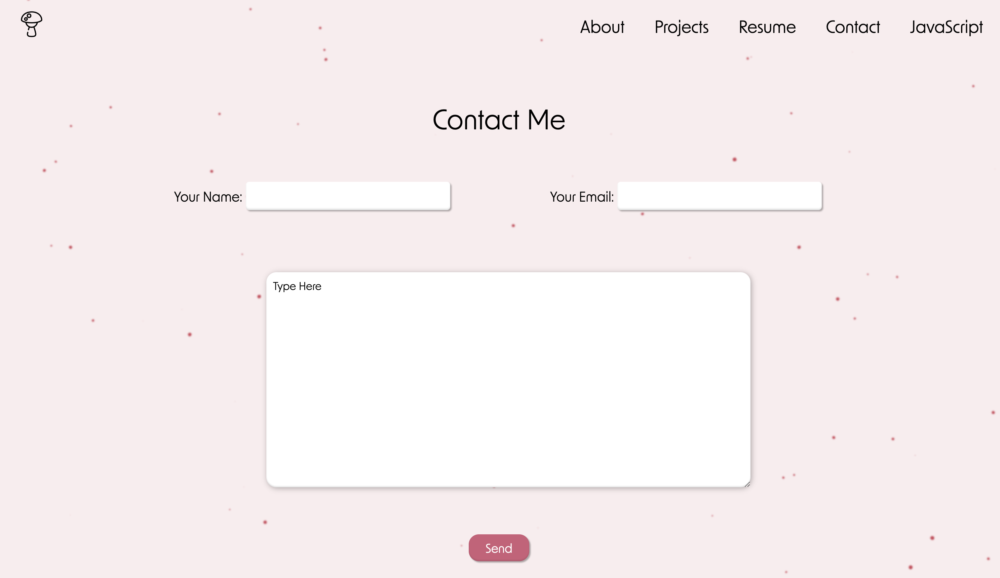
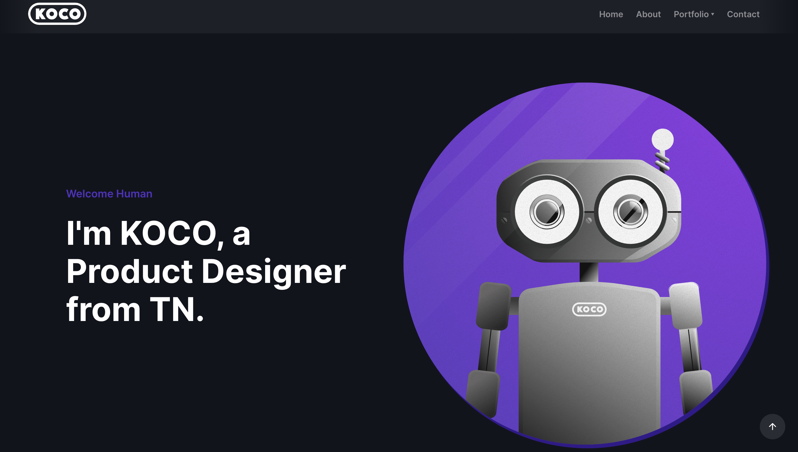
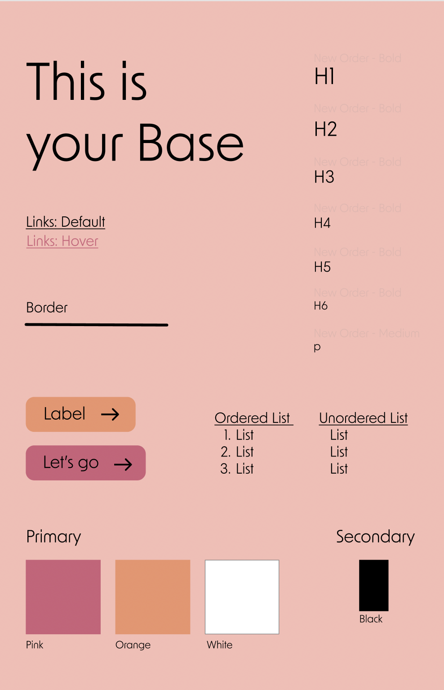

Portfolio Project
Programmer • UI/UX • 2021
 




Programmer • UI/UX • 2021


For a UX Designer, creating a staple portfolio is key to furthering your career. Having a portfolio that accurately and quickly explains who you are as a designer could be the difference between landing a job and not. For my portfolio I wanted to show my diversity of who I am as a designer. Not only can I research and design web and mobile apps but I can also program a lot of these sites while having skills in tactile design and circuitry coding and building. This website shows my skills in both designing and programming so I hope you enjoy :)
One thing I've learned about design so far is that there is no shame using other designers work as inspiration. We are all standing on the backs of giants and its okay to admit it. I began researching other UX designer's portfolios and started finding layouts and content that I wanted to include in my portfolio website.
The next step for me was creating a pattern library that I felt accurately represented me as a designer. Whimsicle features, bright colors, and a quirky font were just some of the design choice made that illustrated who I am.
My final task before creating the site was laying out my content and color scheme for desktop, tablet, and mobile access. By wireframing I was able to get a pretty clear idea of how I was going to begin programming my website.
The final product consists of countless hours of scripting and programming. Using the grid and flexbox system I was able to layout my content in an aesthetically appealing way. I used JavaScript to program the moving pink dot background and to make the to-do list application that can be found by clicking the JavaScript tab at the top right. Though portfolios are always a WIP (work in progress), I think that the template I created is intuitive, simple, and concise and hopefully can inspire other UX designers.